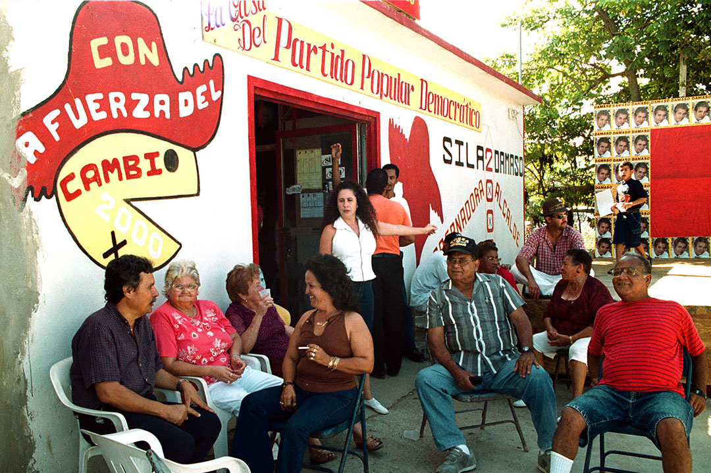

Elecciones generales en Vieques el 11 de julio de 2000, desde el comité del candidato para el Partido Popular Democrático, Dámaso Serrano, quien ganó la alcaldíade la Isla Nena. (Archivo/ Alana Álvarez Valle)
Marchan Myrta Sanes Rodriguez, hermana de David Sanes, junto a José Montañez Sanes, sobrino de Sanes, y el alcalde de Vieques, Dámaso Serrano el 19 de abril de 2001.(AP Photo/ Tomas van Houtryve)
Dámaso Serrano, que formó parte de los desobedientes en Vieques, sale de la cárcel federal bajo fianza luego de entrar en terrenos restringidos de la Marina el 1 de mayo de 2001. (Archivo/ Jose Jimenez)
Serrano puso presión al gobierno de Sila Calderón para asegurar la salida de la Marina de Vieques una vez el presidente George W. Bush emitió la orden. (Carlos Giusti/ carlos.giusti@gfrmedia.com)
Serrano del PPD, junto a Norma Burgos del PNP y Rubén Berríos de PIP, fueron muestra de la unificación a pesar de las diferencias por partido en el repudio a la presencia de la Marina en Vieques. (Carlos Giusti/ carlos.giusti@gfrmedia.com)